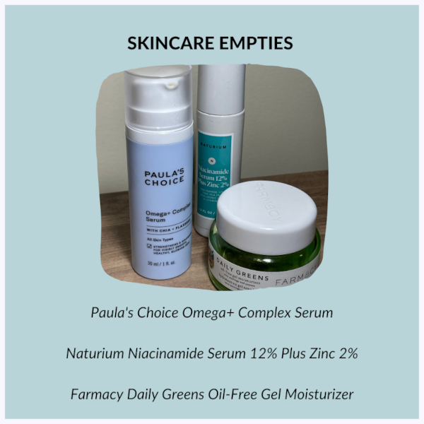
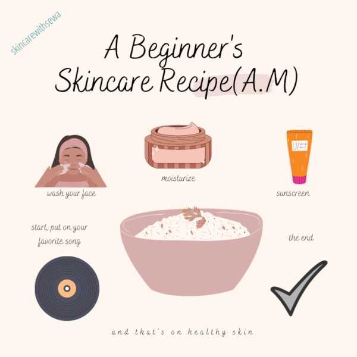

On the home page, I mentioned that one of my main interests is skincare! I will talk more about that on this page.
Skincare is the act of taking care of one's skin. Different people have different skin types and so have different needs for their skin. However, everyone should be taking care of their skin. I take skincare seriously because I have acne prone skin and acne can make my skin irritated and inflamed. Some of my favorite skincare products are pictured below.
Skincare can sometimes be intimidating but it really is just about taking care of your skin. Simple, low step routines work best for people who are just getting into skincare. Below is a quick morning skincare routine for beginners.
I currently run an Instagram account (@skincarewithsewa) which focuses on giving people accurate information on skincare, and tips on how to go about skincare. My aim is for people to have easy access to accurate information. Watch the video below for a glimpse into the kind of content I post on that page.